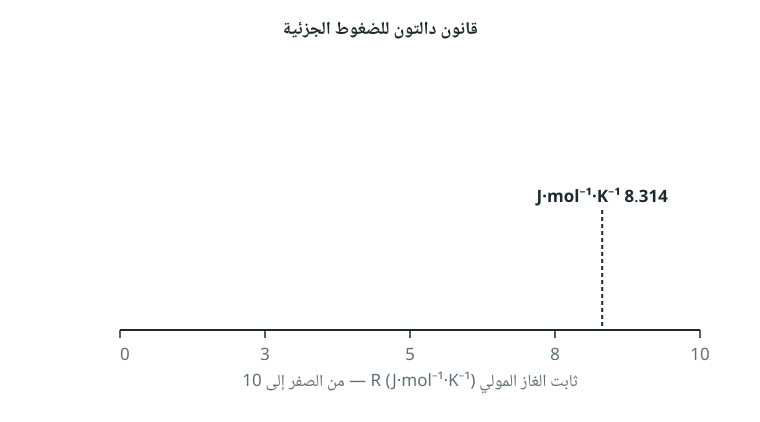

قانون دالتون للضغوط الجزئية
Dalton's law of partial pressures
قانون دالتون ينص على أن الضغط الكلي لخليط غازات غير متفاعلة يساوي مجموع الضغوط الجزئية لكل غاز، حيث الضغط الجزئي هو الضغط الذي كان سيولّده الغاز لو شغل الحجم وحده.
قانون دالتون للضغوط الجزئية ينص على أن الضغط الكلي الذي يمارسه خليط من غازات لا تتفاعل كيميائياً يساوي مجموع الضغوط الجزئية لمكوناته: p_total = Σp_i. والضغط الجزئي للغاز i هو الضغط الذي كان سيولّده لو شغل الحجم الكلي وحده عند درجة الحرارة نفسها. وبما أن كل مكوّن يتصرف كأنه وحده في الوعاء، فإن ضغطه الجزئي يتناسب مع كسر موله: p_i = y_i·p_total، حيث y_i = n_i/n_total. مثال: خليط من 0.200 مول نيتروجين و0.300 مول أكسجين في وعاء 10.0 L عند 298.15 K له ضغط كلي 123 947 Pa، وكسر مولي للنيتروجين 0.400، فضغطه الجزئي 49 579 Pa.
كيف تعمل الظاهرة؟
الضغط في الغاز ناتج عن نقل الزخم إلى الجدار بفعل تصادم الجزيئات. وفي خليط، تتصادم جزيئات كل نوع مع الجدار مستقلة عن غيرها: التصادم بين جزيئتين في وسط الغاز لا ينقل زخماً إلى الجدار، فلا يغيّر الضغط. لذلك يكون معدل نقل الزخم الكلي إلى وحدة المساحة هو مجموع معدلات الأنواع، ومنه مجموع الضغوط الجزئية. هذا الاستقلال هو ما يجعل القانون صالحاً: كل نوع يسهم بضغط يتناسب مع عدده في وحدة الحجم ومع كتلته وسرعته المتوسطة. ولأن درجة الحرارة تحدد السرعة المتوسطة لكل الأنواع بالتساوي، يبقى الإسهام النسبي لكل نوع محكوماً بعدده وحده، أي بكسر موله. وحين تتفاعل الغازات يختل هذا الاستقلال لأن التصادمات تغيّر الأنواع نفسها.
العلاقة بالأرقام
p_total = Σ p_i، وp_i = y_i p_total، وy_i = n_i/n_total، وΣy_i = 1. وللغاز المثالي p_i = n_iRT/V. وبثابت بولتزمان: p = (N/V)kT، فمجموع الأنواع يعطي p_total = (ΣN_i/V)kT. مثال عددي: 0.200 مول N₂ و0.300 مول O₂ في 10.0 L عند 298.15 K: n = 0.500، p = 0.500 × 8.314 462 618 × 298.15 / 0.0100 = 123 947 Pa؛ p(N₂) = 0.400 × 123 947 = 49 579 Pa؛ p(O₂) = 0.600 × 123 947 = 74 368 Pa؛ والمجموع 123 947 Pa.
مفاهيم متقاربة
الضغط الجزئي ليس الضغط الذي «يمارسه» الغاز في وجود الآخرين بمعنى ميكانيكي منفصل؛ هو حدّ رياضي يعبّر عن إسهام نوع واحد في ضغط كلي مقيس. ويُفرَّق بينه وبين التركيز المولي c_i = n_i/V: كلاهما يتناسب مع n_i، لكن أحدهما ضغط والآخر كمية مادة لكل حجم، والعلاقة بينهما p_i = c_iRT. ويُفرَّق كذلك بين قانون دالتون وقانون راؤول للضغط البخاري، فذاك يخص بخار مذيب فوق محلول، وهذا يخص خليط غازات. وأخيراً الضغط الجزئي ليس الضغط البخاري، وهو ضغط التوازن لبخار مادة نقية فوق سطحها.
حدود التطبيق
القانون صالح للغازات المثالية وغير المتفاعلة. عند الضغوط العالية تنحرف الخلائط عن الجمع البسيط لأن قوى بين الجزيئات المختلفة (A-B) تختلف عن (A-A) و(B-B)، فيظهر حجم اختلاط وضغط لا يساوي المجموع؛ ويُصحَّح بمعاملات فوغاسيتية بدل الضغوط الجزئية. وفي الغازات المتفاعلة كيميائياً يتغير عدد المولات نفسه، فلا يبقى المجموع ثابتاً. وفي الأنظمة التي تتكثّف أحد مكوناتها — كبخار ماء يتشبّع — لا يبقى الضغط الجزئي دالة خطية في الكسر المولي، بل يُثبَّت عند ضغط البخار المشبع ويُحدَّد الباقي بالتوازن. وأخيراً لا ينطبق القانون على المحاليل السائلة، حيث تُستعمل الكسور المولية مع معاملات نشاط.

| الكمية | القيمة | المصدر |
|---|---|---|
| ثابت الغاز المولي R | 8.314 462 618 J·mol⁻¹·K⁻¹ | [1] |
| الضغط الكلي لخليط 0.500 مول في 10.0 L عند 298.15 K | 123 947 Pa | [1] |
المصادر
- 1 CODATA Value: molar gas constant — NIST — CODATA 2022 recommended values (2024). physics.nist.gov/cgi-bin/cuu/Value?r · اطُّلع عليه 2026-11-21
- 2 CODATA Value: Boltzmann constant — NIST — CODATA 2022 recommended values (2024). physics.nist.gov/cgi-bin/cuu/Value?k · اطُّلع عليه 2026-11-21
- 3 The International System of Units (SI), 9th edition (2019) — BIPM — Bureau International des Poids et Mesures (2019). www.bipm.org/en/publications/si-brochure · اطُّلع عليه 2026-11-21
استشهد بهذا المصطلح
الصيغتان مبنيتان من بيانات الصفحة نفسها: العنوان والتاريخ ورابط النسخة المنشورة.
قانون دالتون للضغوط الجزئية — Dalton's law of partial pressures. (2026). ديوان المعرفة — انفراد. https://infiradev.com/diwan/terms/term-dalton-law.html
@misc{term-dalton-law2026,
title = {قانون دالتون للضغوط الجزئية},
titleaddon = {Dalton's law of partial pressures},
howpublished = {{ديوان المعرفة — انفراد} — مرجع علمي عربي},
year = {2026},
url = {https://infiradev.com/diwan/terms/term-dalton-law.html},
urldate = {2026-11-26},
note = {مراجعة علمية: hermes (مراجعة معتمدة 2026-11-26)}
}
راجعه: hermes (مراجعة معتمدة 2026-11-26) · 2026-11-26 · آخر تحديث 2026-11-21